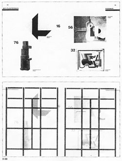

The use of space is a key to how we visually sense, read, and perceive.
It is the frontier of making information visible.
In this grid-style layout by Lissitsky, the use of space focuses our
attention in radical ways.
reading:
Philip Meggs,
Type and Image,
New York: Van Nostrand Reinhold, 1989.
p 80 - 92
on
electronic reserve.
In this reading you will learn about grid structures.
While sometimes grids are explicit, in almost all other cases of good
visual design, they operate implicitly, lurking beneath the surface.
The examples, as well as the principles, can serve as a basis for your
own ideas.
reading:
Edward Tufte, Envisioning Information,
Cheshire, CT: Graphics Press, 1990.
Chapter 3: Layering and Separation
on
regular reserve.
Layering is a means for structuring the presentation of large amounts
of information, in order to promote readability. It is a means for
grouping elements into levels, and facilitating coherent readings of
the levels. Tufte's book contains beautiful examples and clear analysis.
This web site from the 2003 Dutch Electronic Arts Festival makes
extensive use of layering and grid structures in its provocative
presentation of a large collection structured around projects and events.
Make sure you navigate down into some of the projects. What works well
in this site? What could be improved?